Conceito: Força exercida sobre os elétrons livres
para que estes se movimentem no interior de um condutor.
Símbolo: V, E ou U.
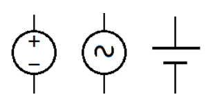
Corrente Elétrica
Introdução: Ao ligar dois corpos com cargas elétricas
diferentes, há um fluxo de elétrons de um corpo para o outro, a fim de
reestabelecer o equilíbrio. Este fluxo de elétrons é denominado
corrente elétrica.
Símbolo: I.
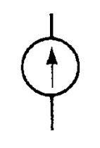
A intensidade de corrente elétrica é o número de
cargas elétricas que passam por segundo em um determinado ponto.
1A = 1C/s = (6,25 x 1018e)/1s ->
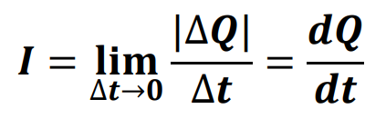
Exemplos práticos:
Se uma corrente de 2A passar através de um medidor durante um
minuto, isso equivale a quantos Coulombs?
Resolução 1
Durante 45 segundos uma secção de um condutor foi atravessada
por 9x1020 elétrons. Qual a intensidade média de
corrente elétrica?
Resolução 2
Corrente Contínua (CC) e Corrente Alternada (CA)
Um gerador de tensão é um dispositivo que mantém, por meio de uma
ação química, mecânica ou outra qualquer, uma tensão entre dois
polos, para que assim o deslocamento das cargas elétricas ocorra.
Químico: Pilha
Mecânico: Gerador Eólico
Solar: Painéis Solares
Geradores de Tensão Constante
Corrente de sentido e intensidade constantes no decorrer do
tempo.
Pilhas
Baterias
Painéis solares
Geradores de Tensão Alternada
Corrente de sentido e intensidade variadas no decorrer do tempo.
Hidrelétricas
Termelétricas
Resistência Elétrica
Conceito: Oposição encontrada pela corrente elétrica
ao percorrer um material.
Quanto mais elétrons livres possui o material, menor sua
resistência.
A resistência depende das dimensões físicas e do tipo do material.
Símbolo: R.
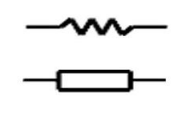
Resistores
Dispositivos fabricados para fazerem uso de sua resistência
elétrica.
Amplamente utilizados na eletrônica e eletricidade em diferentes
circuitos.
O chuveiro elétrico e o ferro elétrico são equipamentos que
utilizam a resistência elétrica para transformar energia elétrica
em energia térmica (calor).
Efeito Joule: É a transformação de energia
elétrica em energia térmica. O aquecimento é provocado pela maior
vibração dos átomos. É devido a esse efeito que a lâmpada de
filamento emite luz. O efeito Joule também é responsável pelo
consumo de energia elétrica do circuito, quando essa energia se
transforma em calor.
Principais tipos de resistores:
Fixos: Valor da resistência não pode ser
alterado.
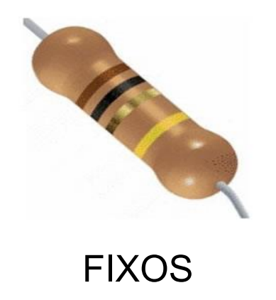
Ajustáveis: Valor da resistência pode ser
alterado uma única vez.
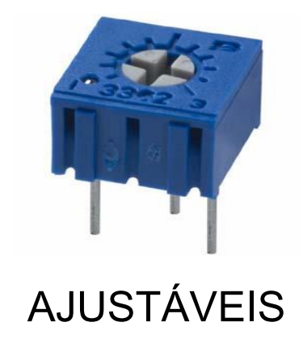
Variáveis: Valor da resistência pode ser alterado
continuamente.
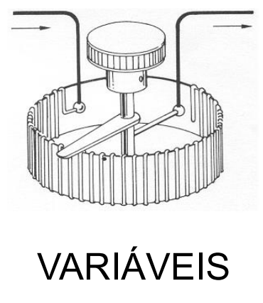
Lei de OHM
A Lei de Ohm afirma que, para um condutor mantido à
temperatura constante, a razão entre a tensão entre dois pontos e a
corrente elétrica é constante. Essa constante é denominada de
resistência elétrica.
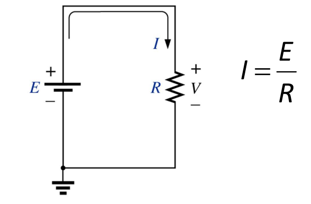
Tensão e sentido da Corrente em um resistor:
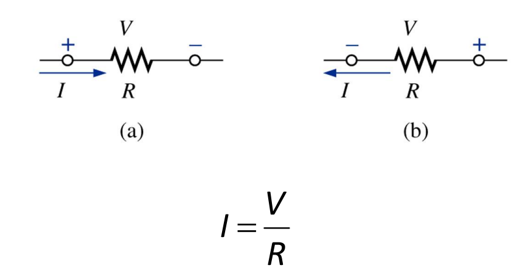
Potência Elétrica
O termo é aplicado para fornecer uma indicação de quantidade de
trabalho que pode ser realizado em um determinado período de tempo.
Potência é a velocidade com que um trabalho é executado.
Cálculo de potência:
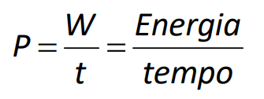
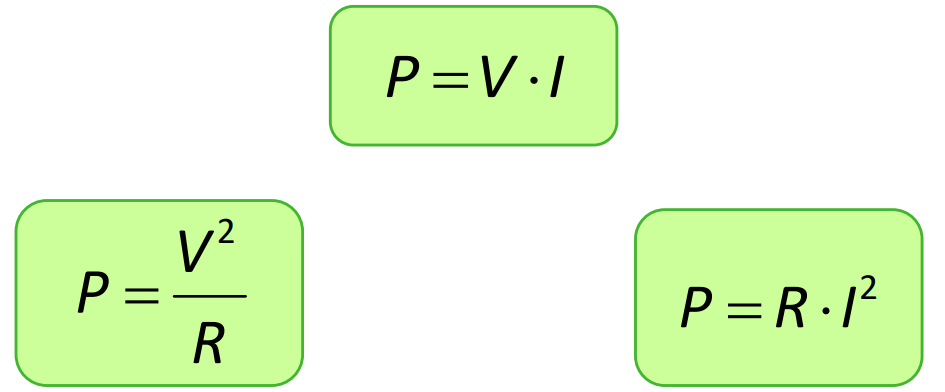
Elementos Passivos e Ativos
Os elementos de um circuito podem ser classificados em relação à forma
como conduzem eletricidade em 3 grupos:
Passivos;
Ativos;
Eletromecânicos.
Passivos
Todos os componentes que não aumentam a intensidade de uma
corrente ou tensão de um circuito. Não geram energia; eles apenas
interagem com a energia, dissipando-a. Não geram ganho nem
direcionam a corrente, embora possam retardá-la ou armazená-la.
Resistores
Capacitores
Indutores
Ativos
São capazes de gerar energia e também podem manipular a direção da
corrente dentro do circuito. Estes componentes são dispositivos
que fornecem ganho à corrente ou a direcionam.
Diodos
Transistores
Fontes de Energia
Eletromecânicos
São todos aqueles que envolvem algum movimento mecânico,
combinando processos elétricos e mecânicos em um único
dispositivo.
Relés
Cristal
Chaves
Motores
Ondas em Circuitos CA
Informação Prévia: Os conceitos básicos e os
elementos de uma onda devem estar bem consolidados no seu
conhecimento. Você deve saber o que é e como calcular: Frequência,
Período, Amplitude, Velocidade Angular e o Valor Instantâneo de uma
onda.
O que será aprofundado aqui é o conceito de
Tensão Eficaz e, posteriormente, o
Adianto ou Atraso de Corrente (Defasagem).
Tensão Eficaz (Valor RMS)
Em um circuito de corrente alternada (CA), o valor da tensão varia
continuamente ao longo do tempo, formando uma onda senoidal que
atinge picos positivos e negativos. Como a tensão não é constante,
medir o "trabalho real" que essa onda consegue realizar exige um
referencial. É aí que entra a Tensão Eficaz, também
conhecida como Tensão RMS (do inglês
Root Mean Square, ou Valor Quadrático Médio).
A Equivalência CA e CC: A Tensão Eficaz de um
sinal alternado é exatamente igual ao valor de uma
tensão contínua (CC) que produziria a
mesma dissipação de potência (calor) em um mesmo
resistor.
Na prática: Se você ligar um aquecedor a uma tomada
de tensão alternada com 220V RMS, ele vai esquentar exatamente o
mesmo tanto que esquentaria se fosse ligado a uma grande bateria de
tensão contínua de exatos 220V.
Para ondas perfeitamente senoidais, o cálculo do valor eficaz é
feito dividindo o valor de pico (a amplitude máxima da onda) pela
raiz quadrada de 2.
Cálculo:
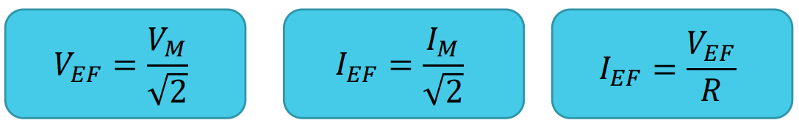
Potência Dissipada
Em um circuito puramente resistivo, a potência dissipada pode ser
calculada pelas mesmas equações utilizadas nos circuitos de corrente
contínua. Contudo, deve ser utilizado os valores eficazes da tensão
e da corrente.
Cálculo:
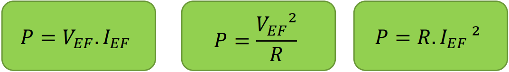
Diferença de Fase ou Defasagem
A diferença de fase entre duas curvas é sempre medida entre dois
pontos do eixo horizontal nos quais as duas curvas têm a mesma
inclinação.
Quando duas formas de onda interceptam o eixo horizontal no mesmo
ponto e com a mesma inclinação, elas estão
em fase;
Quando duas formas de onda interceptam o eixo horizontal em pontos
diferentes e com a mesma inclinação, elas estão
defasadas;
Termos utilizados para indicar diferenças de fase entre duas
formas de onda senoidas de mesma frequência e plotadas no mesmo
gráfico:
Atrasado
Adiantado
Atrasado:
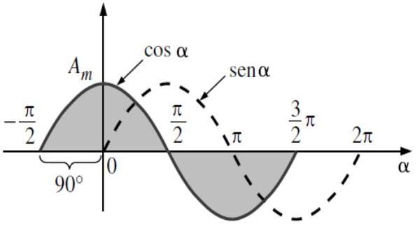
Diz-se que a curva que representa o seno está
atrasada de 90º em relação à curva do
cosseno.
Adiantado:
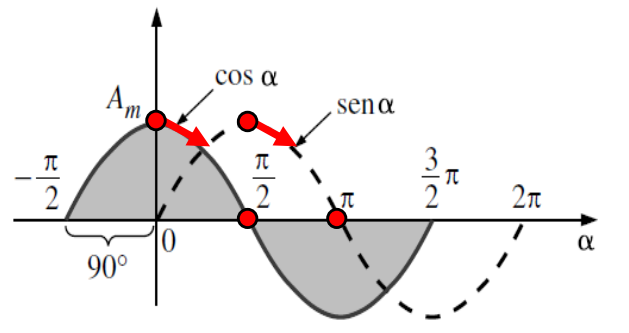
Diz-se que a curva que representa o cosseno está
adiantada de 90º em relação à curva do
seno.
Elementos de Um Circuito
Elementos como nós, ramos e malhas já são de conhecimento comum. Aqui
abordaremos os elementos não antes vistos.
Potencial 0 - Terra:
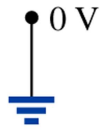
Circuito Aberto:
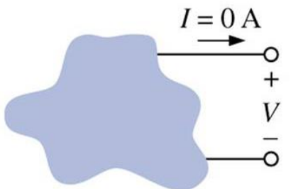
Curto Circuito:
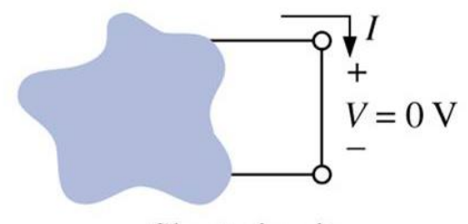
Associação em Série
Dois elementos estão em série se:
Possuem somente um terminal em comum;
O ponto em comum entre os dois elementos não está conectado a outro
elemento percorrido por corrente;
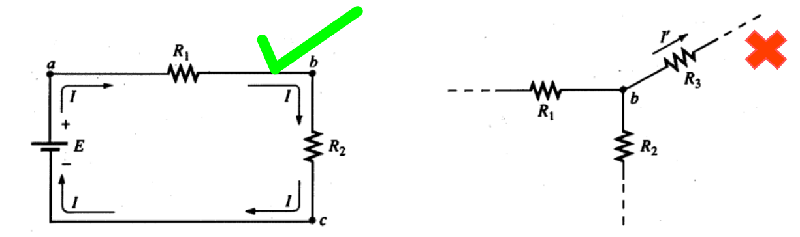
Para resistores em série, a resistência total de uma configuração em
série é a soma das resistências.
RT=R1 + R2 + R3 + R4
+ ...
Regras para associação em série:
A corrente em cada elemento em série é a mesma;
A resistência total é maior que a maior resistência;
A tensão através de cada elemento é uma função de sua resistência
terminal;
A Potência total é a soma das potências individuais de cada
elemento;
Fontes de Tensão
A associação em série de fontes de tensão conecta o polo positivo de
uma fonte ao polo negativo da seguinte, resultando em uma soma das
tensões individuais.
É crucial observar a polaridade das ligações: se todas as fontes
estiverem alinhadas, as tensões se somam; se alguma estiver invertida,
sua tensão será subtraída do total.
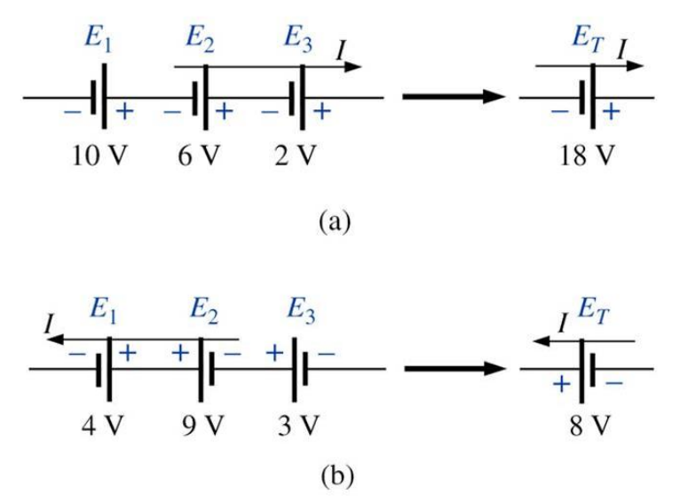
No esquema (a), as fontes de tensão estão com a polaridade alinhada
e no sentido da corrente, de forma que o valor de todas é somado
para se obter o total. No esquema (b), seguindo o sentido da
corrente, a fonte da direita está invertida, de forma que seu valor
é subtraído do total.
Divisor de Tensão
A regra do divisor de tensão estabelece que, em um circuito em série,
a tensão total da fonte se divide entre os resistores em proporção
direta aos seus valores de resistência. Ou seja, o maior resistor
sofrerá a maior queda de tensão.
Essa ferramenta é extremamente útil para a análise de circuitos, pois
permite determinar a tensão em um componente específico de forma
direta, sem a necessidade de calcular a corrente total do circuito
primeiro.
Princípios fundamentais do Divisor de Tensão:
Aplica-se estritamente a elementos associados em
série;
A tensão sobre um resistor é sempre uma fração da tensão total do
circuito;
A soma de todas as quedas de tensão divididas é exatamente igual à
tensão da fonte (Lei de Kirchhoff para Tensões).
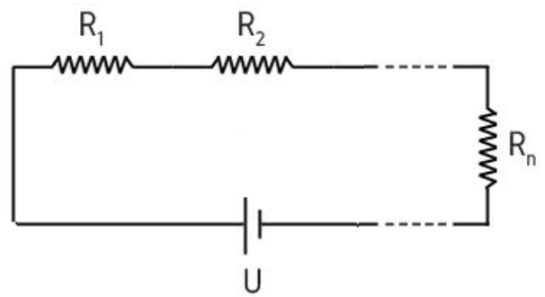
Representação de um circuito divisor de tensão. A tensão total
aplicada é distribuída através da malha em série. A queda de tensão
em um ponto específico de interesse depende da relação entre a
resistência daquele ponto e a resistência equivalente total.
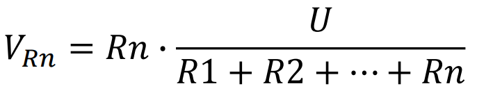
A fórmula matemática do divisor de tensão indica que a tensão
procurada em um resistor (VRn) é igual ao valor de sua própria resistência (Rn) dividido pela resistência total da associação em série (RT), multiplicado pela tensão total aplicada (U).
Associação Paralela
Dois elementos estão em paralelo se:
Possuem dois pontos de ligação em comum;
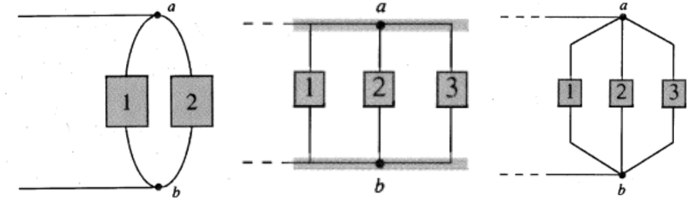
A resistência total de N resistores em paralelo de valor igual é a
resistência de um resistor dividida pelo número de resistores em
paralelo.
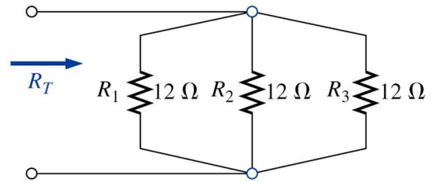
RT=R1/N
E para resistores em paralelo de valores diferentes, a resistência
total é a soma dos inversos das resistências.
A resistência total de resistores em paralelo é sempre menor que o
valor do menor resistor.
Regras para associação em paralelo:
A corrente através de cada elemento é uma função de sua resistência
terminal;
A resistência total é menor que a menor resistência;
A tensão em cada elemento paralelo é igual;
Potência total é a soma das potências individuais de cada elemento;
Fontes de Corrente
Duas ou mais fontes de corrente em paralelo podem ser substituídas por
uma única fonte de corrente tendo um valor absoluto determinado pela
diferença da soma das correntes em um sentido e a soma no sentido
oposto.
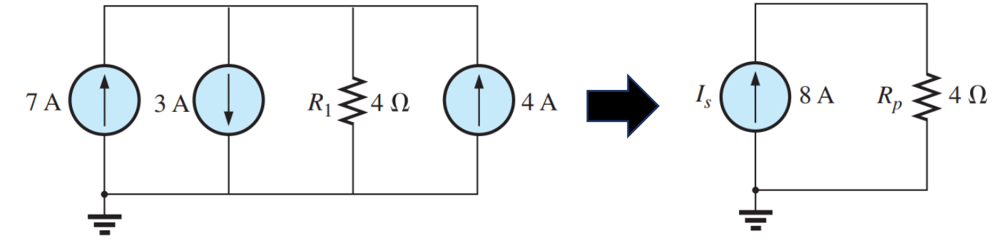
Note que as 3 fontes de corrente em paralelo, com valores de
7, 3 e 4A podem
ser substituídas por uma única fonte de 8A, somando
as fontes no mesmo sentido, e subtraindo as fontes com sentido
contrário. Neste caso, soma os valores de 7A e 4A, e subtrai o valor
de 3A, resultando em uma fonte de 8A.
Fontes de Tensão
Fontes de tensão podem ser colocadas em paralelo somente se tiverem a
mesma tensão.
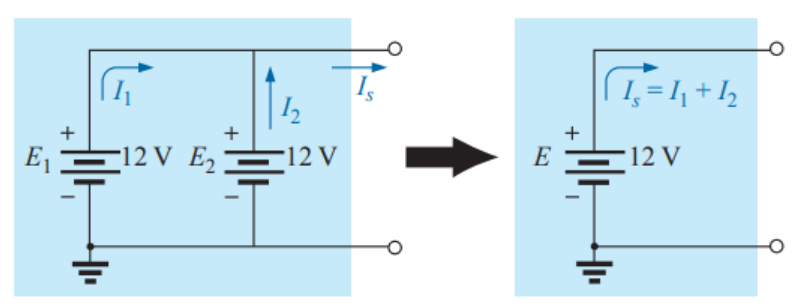
Note que o valor da fonte permanece 12V e a
corrente IS agora substitui as correntes
I1 e I2.
Lei de Kirchhoff das correntes:
A soma algébrica das correntes que entram e saem de um nó é
nula.
Ou seja, a mesma corrente total que entra em nó é a mesma corrente
total que sai.
Para um circuito paralelo, a corrente fornecida pela fonte é igual à
soma das correntes dos ramos.
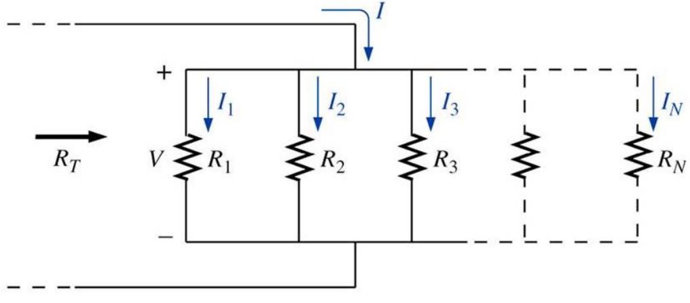
Neste circuito, I é a soma das correntes dos ramos.
I = I1 + I2 + I3 + ... + IN
Divisor de Corrente
Metodologia que permite determinar as correntes de um único resistor
sem que seja necessário conhecer a tensão total do circuito.
Caso particular com 2 resistores:
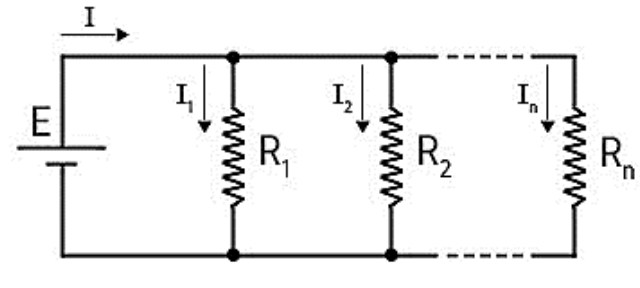
A corrente total I sai da fonte de tensão e viaja pelo fio
principal. Quando encontra um nó, essa corrente total precisa de
se separar, criando correntes menores para cada ramo (I1, I2,
..., In).
A soma de todas as correntes que entram num nó é igual à soma
das correntes que saem. Ou seja, a corrente total é exatamente a
soma das correntes individuais:I = I1 + I2 + \ + In.
A corrente é "preguiçosa". Ela sempre vai preferir o caminho
mais fácil. Portanto, o ramo que tiver a menor resistência
receberá a maior fatia da corrente total.
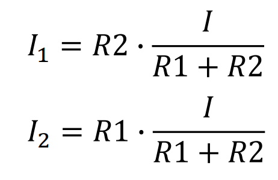
Elementos em Corrente Alternada e Impedância
O Resistor em Corrente Alternada
Em elementos puramente resistivos, a tensão e a corrente não sofrem
defasagem, ou seja, estão em fase.
Tensão:
vR(t) = i(t) × R
Impedância:
ZR = R
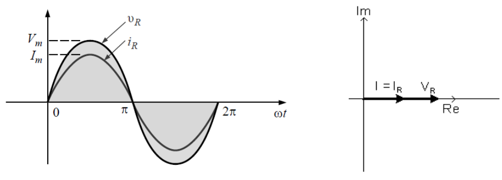
Forma de onda senoidal mostrando V e I em fase. No diagrama
fasorial, os vetores de tensão e corrente estão sobrepostos no eixo
real.
O Indutor em Corrente Alternada
Para um indutor, a tensão (vL) está adiantada 90° em relação à corrente (iL). Alternativamente, diz-se que a corrente está atrasada 90° em
relação à tensão.
Tensão Indutiva:
vL(t) = L × (diL/dt)
Reatância Indutiva:
XL = ωL ∠ 90° = jXL
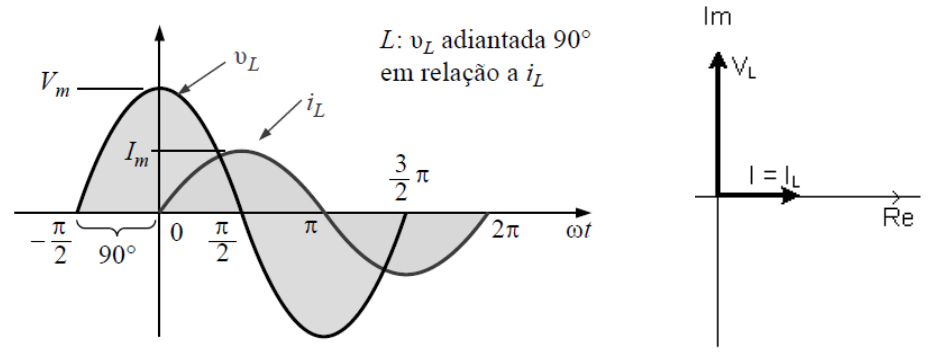
A curva de tensão atinge o seu pico antes da curva de corrente. No
diagrama fasorial, o vetor de tensão aponta para cima no eixo
imaginário positivo (+90°).
O Capacitor em Corrente Alternada
Para um capacitor, o comportamento é inverso ao do indutor: a corrente
(iC) está adiantada 90° em relação à tensão (vC).
Corrente Capacitiva:
iC(t) = C × (dvC/dt)
Reatância Capacitiva:
XC = (1/ωC) ∠-90° = -jXC
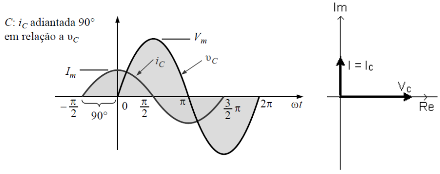
A curva de corrente atinge o pico antes da tensão. No diagrama
fasorial, o vetor da tensão aponta para baixo no eixo imaginário
negativo (-90°).
Impedância e Resposta em Frequência
A Impedância (Z) é a razão entre o fasor tensão e o
fasor corrente, medida em Ohms (Ω). Ela pode ser representada
graficamente no plano complexo:
Equação Geral:
Z = R + jXL - jXC
Resistor (R): Eixo horizontal (Real). O seu valor
se mantém constante independente da frequência.
Indutor (XL): Eixo vertical imaginário
positivo (+90°). A sua reatância aumenta linearmente à medida que a
frequência aumenta.
Capacitor (XC): Eixo vertical imaginário
negativo (-90°). A sua reatância diminui exponencialmente à medida
que a frequência aumenta.
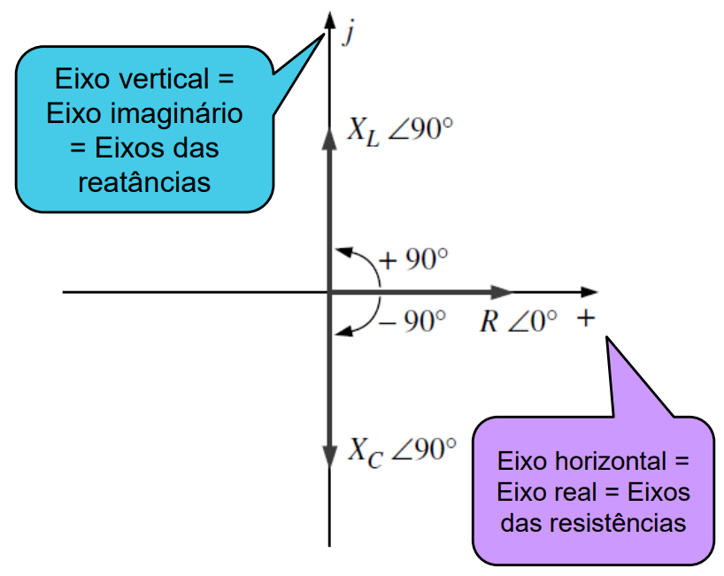
Representação das reatâncias e resistência no plano complexo (Eixo
Real vs Eixo Imaginário j).
Associação de Impedâncias
Associação em Série
Corrente: É a mesma em todos os componentes
(IT = I1 = ... = IN).
Tensão: Divide-se entre os componentes (VT = V1 + ... + VN).
Tensão: É a mesma sobre todas as ramificações
(VT = V1 = V2).
Corrente: Divide-se entre as ramificações (IT = I1 + I2).
Impedância Equivalente: O inverso da soma dos
inversos (1/ZT = 1/Z11 + 1/Z2).
Divisor de Corrente: (
I1 = Z2 × IT/(Z1 +
Z2)) ou (
I2 = Z1 × IT/(Z1 +
Z2))
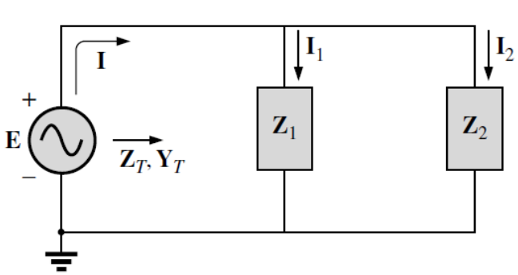
Números Complexos
Em algumas análises de circuitos em corrente contínua, foi necessário
realizar soma algébrica de tensões e de correntes. Para realizar estas
operações em corrente alternada, utilizamos números complexos.
O Valor de √-1
Na matemática pura, a raiz quadrada de -1 é conhecida como a unidade
imaginária e é representada pela letra i. No entanto,
na Engenharia Elétrica, a letra i já é universalmente
consagrada para representar a
corrente elétrica instantânea. Adotamos a letra
j para representar a unidade imaginária (j = √-1).
Mas por que usar números complexos? Em circuitos de
Corrente Alternada, as grandezas não possuem apenas uma intensidade,
mas também sofrem um deslocamento no tempo devido ao atraso ou
adiantamento provocado por indutores e capacitores. Os números
complexos são a ferramenta matemática perfeita para isso, pois
conseguem guardar essas duas informações dentro de um único elemento,
chamado de Fasor.
O uso do operador j nos permite tratar os circuitos
de CA no plano cartesiano. Graças a essa conversão, podemos resolver
circuitos complexos de Corrente Alternada utilizando as exatas mesmas
regras matemáticas simples da Corrente Contínua, como a Lei de Ohm e
as Leis de Kirchhoff.
Durante as análises, será encontrado potências de j,
para tal, segue a tabela abaixo. Perceba que as potências seguem uma
ordenação:
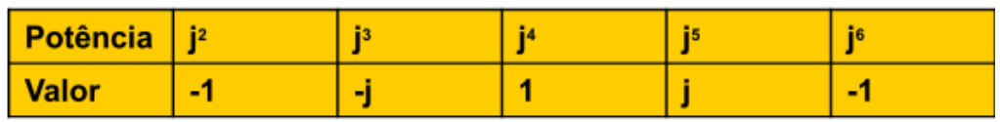
Forma Retangular
Um número complexo pode ser representado por um ponto em um plano. Uma
forma de representação é a Forma Retangular, de fórmula:
Que representa os dois eixos cartesianos da seguinte forma:
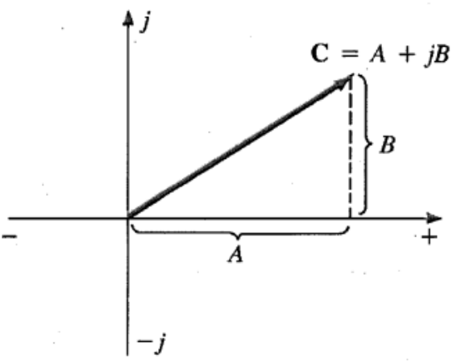
Forma Polar
Outra forma de representação é a Forma Polar, que utiliza o módulo do
valor e o ângulo de defasagem, sempre medido no sentido anti-horário a
partir do eixo real positivo, para representar um número complexo. A
fórmula é a seguinte:
Que representa os dois eixos cartesianos da seguinte forma:
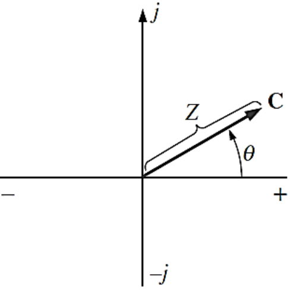
Conversão Entre as Formas
Para converter um número retangular em polar, usamos as seguintes
equações:
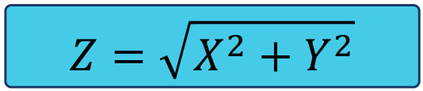
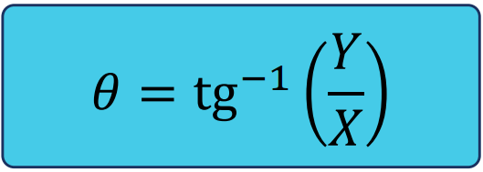
Para converter um número polar em retangular, usamos as seguintes
equações:
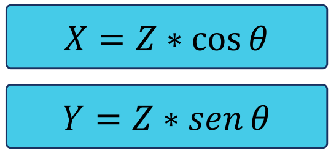
Operações Matemáticas
Para realizar operações matemáticas com números complexos, é
fundamental escolher a forma de representação mais adequada. A forma
polar não é conveniente para efetuar adições e subtrações. Portanto,
utilizamos a forma retangular para adição e subtração, e a forma polar
para facilitar a multiplicação e a divisão.
Adição e Subtração (Forma Retangular)
Para adicionar ou subtrair números complexos, basta operar
separadamente as partes reais e as partes imaginárias.
Adição: C1 + C2 = (A1
+ A2) + j(B1 + B2)
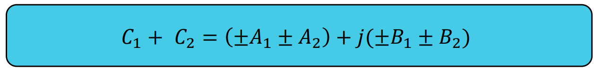
Subtração:C1 - C2 = (A1
- A2) + j(B1 - B2)
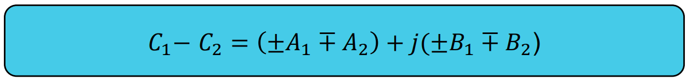
Mutiplicação e Divisão (Forma Polar)
Na forma polar, a multiplicação e a divisão tornam-se operações
muito mais diretas.
Multiplicação: Multiplica-se os módulos e soma-se
os ângulos.
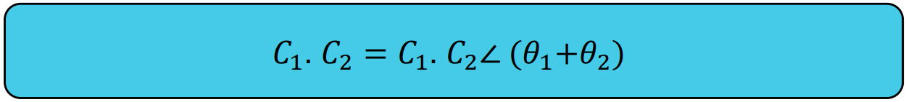
Subtração: Divide-se o módulo do numerador pelo
módulo do denominador e subtrai-se as respectivas fases.
Circuitos em Ponte
Os circuitos em ponte são configurações eletrônicas fundamentais
utilizadas principalmente para medições de precisão e controle de
potência. Eles consistem em quatro braços de componentes dispostos em
formato de losango, alimentados por uma fonte e conectados por um
detector central.
Os circuitos em ponte possuem múltiplas aplicações, como
retificadores, condicionamento de sinais de sensores, etc. Uma das
principais funções dos circuitos em ponte é a utilização ou aferição
da tensão ou da corrente que passa pelo ramo de ligação entre os ramos
que estão conectados aos terminais do sinal de entrada.
Ponte de Wheatstone
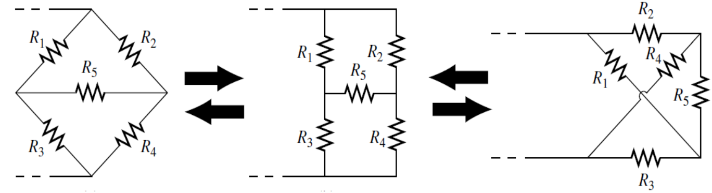
Circuitos em ponte de Wheatstone. Perceba que todos estes
circuitos são equivalentes.
A ponte de Wheatstone foi a primeira a ser idealizada. Sua ideia era
encontrar resistências desconhecidas. Posteriormente, surgiram outras
configurações de circuitos em ponte.
Ponte de Maxwell
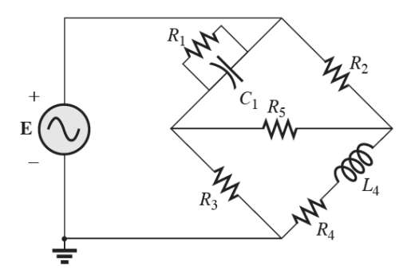
Utilizada para encontrar induntâncias desconhecidas, com um
resistor em paralelo com um capacitor.
Ponte de Hay
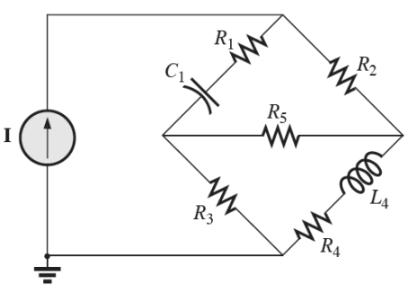
Também utilizada para encontrar induntâncias, mas utiliza o
capacitor em série com o resistor.
Conversões de Circuitos
Na análise de circuitos elétricos, frequentemente encontramos
componentes interligados de maneiras que não estão nem em série nem em
paralelo simples. Nesses cenários, destacam-se quatro topologias
clássicas de redes de três terminais. A grande sacada aqui é entender
que, topologicamente, essas quatro configurações se resumem a
apenas duas arquiteturas equivalentes.
Estrela (Y) e T
Na configuração Estrela três elementos de
circuito se conectam a um único nó central comum.
Quando essa exata mesma topologia geométrica é desenhada de forma
mais "quadrada" ou ortogonal nos esquemas, ela assume a forma da
letra T.
Redes Y e T são idênticas
Possuem nó central comum
Típico em sistemas trifásicos
Delta (∆) e Pi (π)
Na configuração Delta três elementos são
conectados ponta a ponta, formando um
laço fechado (um triângulo).
Assim como no caso anterior, se você "esticar" a base desse
triângulo para facilitar o desenho no papel, o circuito assumirá o
formato da letra grega Pi.
Redes Delta e Pi são idênticas
Laço fechado (sem nó central)
Alta confiabilidade de malha
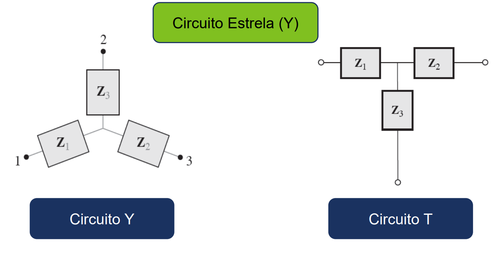
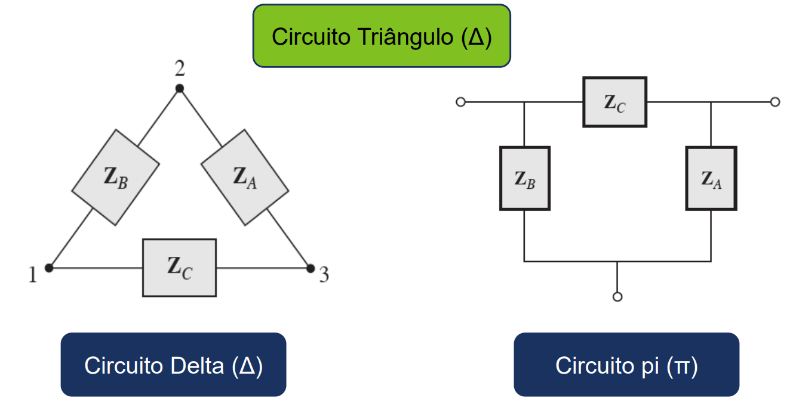
Conversões Delta-Y e Y-Delta
Partindo deste circuito que integra tanto Delta quanto Y, abaixo vemos
as equações de conversão.
Fontes Independentes vs. Dependentes:
Enquanto uma fonte independente fornece um valor fixo de tensão ou
corrente, independentemente do que acontece no resto do circuito, uma
fonte dependente atua de forma diferente. O valor de tensão ou
corrente que ela fornece "depende" diretamente de uma tensão ou
corrente medida em outro ponto específico do mesmo circuito. Elas são
representadas por losangos nos diagramas e são essenciais para modelar
o comportamento de componentes ativos, como transistores e
amplificadores operacionais.
Transformação de Fontes
Assim como nas fontes independentes, podemos simplificar a análise
do circuito aplicando o método de
Transformação de Fontes. A regra topológica
fundamental é:
Um modelo prático de Fonte de Tensão é composto
por uma fonte ideal com uma impedância conectada em
série.
Um modelo prático de Fonte de Corrente é composto
por uma fonte ideal com uma impedância conectada em
paralelo.
A conversão matemática entre elas obedece à Lei de Ohm ($E = I \cdot
Z$). Porém, ao realizar a conversão envolvendo fontes dependentes,
jamais podemos absorver ou alterar o componente onde está a variável
que controla a fonte, caso contrário, a fonte dependente perde sua
referência matemática e o circuito fica inválido.
Um conceito crucial para a análise de circuitos é entender o que
ocorre com a fonte dependente quando sua variável de controle ($V_x$
ou $I_x$) atinge zero:
Se for uma fonte de tensão dependente e a variável de controle for
zero, ela fornecerá $0V$. Na prática, uma diferença de potencial
de 0V entre dois pontos significa que eles estão no mesmo
potencial, ou seja, a fonte passa a se comportar como um
curto-circuito.
Se for uma fonte de corrente dependente e a variável de controle
for zero, ela fornecerá $0A$. A ausência total de fluxo de
elétrons significa que a fonte passa a se comportar como um
circuito aberto.
Potência em Circuitos de Corrente Alternada
Tanto a tensão quanto a corrente variam em função do tempo em
circuitos CA. O que significa que, antes, onde tínhamos um valor fixo
para Potência, Tensão e Corrente em corrente contínua, agora temos
funções de Potência, Tensão e Corrente.
$P = V \cdot I$, para CC
$P(t) = V(t) \cdot I(t) $, para CA
Potência no Resistor
A corrente e a tensão sempre estão em fase neste dispositivo,
portanto a potência no resistor sempre é consumida, ou dissipada.
Perceba que nenhuma potência é devolvida à fonte pelo resistor.
Como tensão e corrente sempre estão em fase (positivo - positivo,
ou negativo - negativo), o produto da tensão pela corrente sempre
é positivo. Sua unidade de medida é Watt (W).
E pode ser calculada por:
Potência no Indutor
A corrente e a tensão estão em defasagem, de modo que ao longo dos
ciclos, o produto da tensão pela corrente pode ser negativo. No
geral, a potência média de um indutor é zero, a troca de potência
entre uma fonte e uma carga puramente indutiva é zero. Lembrando que
o indutor é um dispositivo que atrasa a corrente em relação à
tensão. Perceba no diagrama abaixo.
Veja que o indutor atrasa a corrente em 90° em relação à tensão, e
que ao longo dos ciclos, a potência que o indutor absorve é
devolvida ao sistema.
O símbolo de medida de potência em um indutor é o Volt-Ampére
Reativo, ou VAR. A potência no indutor pode ser calculada por:
Potência no Capacitor
A potência no capacitor também depende do seno da defasagem como no
indutor, a diferença é que o ângulo para o indutor é de 90° e para o
capacitor de -90°.
Veja que que, diferente do indutor que atrasa a corrente em 90°, o
capacitor atrasa a tensão em 90°. Assim como no indutor, a potência
média de um capacitor é zero, a troca de potência entre uma fonte e
uma carga puramente capacitiva é zero. O símbolo de medida de
potência em um capacitor também é o Volt-Ampére Reativo, ou VAR. A
potência no capacitor pode ser calculada por:
Potência Aparente
Quando se calcula a potência total de uma impedância com parte real
e imaginária, o resultado é a potência aparente, que representa a
potência ativa e reativa que o circuito utiliza. A potência aparente
pode ser obtida por meio das fórmulas de potência:
Sua unidade é o Volt-Ampère (VA), diferente das potência no
capacitor e indutor, que tem como unidade o Volt-Ampère Reativo
(VAR).
Triângulo de Potências
O triângulo de potências representa a relação entre as potências
aparente, ativa e reativa de um circuito.
Perceba que na primeira figura, a potência indutiva, representada
por $Q_L$ está no sentido positivo do eixo imaginário, enquanto a
potência capacitiva, representada por $Q_C$, está no sentido
negativo. Isto ocorre pois como vimos, para o indutor, a defasagem é
de +90°, e para o capacitor, a defasagem é de -90°. O eixo
horizontal representa a potência ativa, aquela que realmente é usada
para produzir algum trabalho, e está sempre no sentido positivo do
eixo x. Abaixo, algumas fórmulas úteis quando se trabalha com
triângulo de potências e fator de potência:
Análise Nodal (Leis de Kirchhoff)
Lei de Kirchhoff das Tensões: Lei das Malhas
A Lei das malhas de Kirchhoff diz que a soma algébrica das variações
de potencial em uma malha fechada é nula. Por convenção, adotamos o
sentido horário como positivo para análises de malhas.
Convenções:
Adoção do sentido horário;
+ → - = queda de tensão (-)
- → + = aumento de potencial (+)
Lei de Kirchhoff das Correntes: Lei dos Nós
A Lei das correntes de Kirchhoff diz que a soma algébrica das
correntes que entram e saem de um nó é nula.
O exemplo abaixo ilustra a lei das correntes:
Veja que a corrente que entra no nó $a$ é a mesma que sai do nó $d$.
Método das Tensões de Nó
Este método de análise de circuitos é baseado nas aplicações das
Leis de Kirchhoff. Ele é especialmente útil para resolver circuitos
onde não é possível realizar conversões.
Para a aplicação deste método, seguimos 4 regras:
Definir a quantidade de nós do sistema;
Definir um nó de referência;
Aplicar a Lei de Kirchhoff para as correntes que partem desse nó;
Calcular cada corrente que parte desse nó.
O exemplo abaixo ilustra o uso do método das Tensões de Nó:
Aqui definimos a quantidade de nós do sistema, que são 2 ($V_a$ e
$V_b$). Após, escolhemos $V_b$ como nó de referência (terra), por
isso é mostrado apenas $0V$. Aplicando a Lei de Kirchhoff para as
correntes que partem do nó (não consideramos o nó de referência
aqui), temos 3 correntes ($I_a$, $I_b$ e $I_c$). Seguindo a Lei de
Kirchhoff, o somatório destas correntes é nulo, portanto para
encontrar os valores de cada corrente, aplicamos Lei de Ohm, onde
obtemos:
A partir daqui, basta realizar os cálculos. Veja este outro exemplo
mais complexo com fontes de corrente e fontes dependentes e como
resolveríamos: